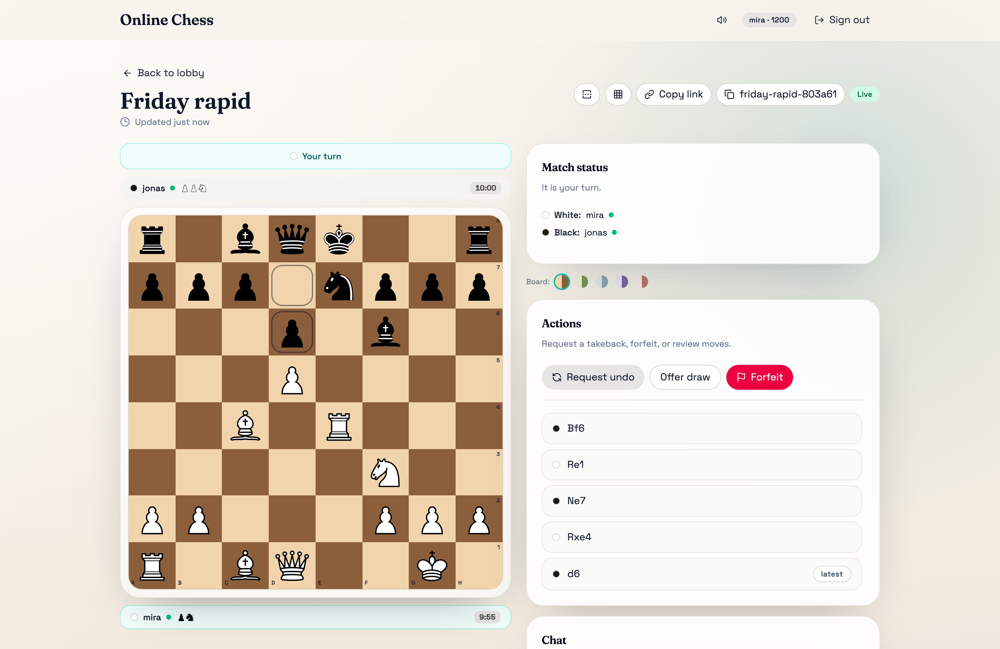
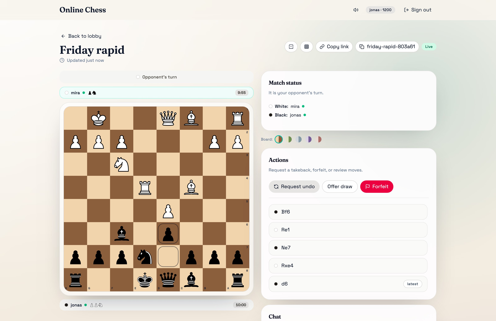

Online Chess
Play chess with a friend in the browser.
chess.trebeljahr.com
Play chess with a friend in the browser.
chess.trebeljahr.com

Open source · AGPL
Send a friend a link, pick a clock and play. Every move shows on both boards at once.
chess.trebeljahr.com
One game, two screens. Each move shows on both boards at once.
chess.trebeljahr.com
White's screen

Black's screen